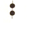
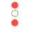
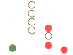
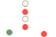
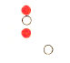
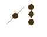
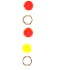
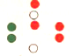

| 131. Кой кораб носи този знак през деня?:  |
|
Кораб, ограничен в способността си да маневрира. Кораб без управление Риболовен кораб, който не трали Ветроходен кораб |
| документ регламентиращ правилния отговор: GOLREG (rule27/a) |
| 132. Кой кораб носи тези светлини?: |
|
Кораб, ограничен в способността си да маневрира, движи се на ляво Кораб без управление, движи се на ляво Риболовен кораб, който не трали, движи се на ляво Ветроходен кораб, движи се на ляво |
| документ регламентиращ правилния отговор: GOLREG (rule27/a) |
| 133. Кой кораб носи тези светлини?: |
|
Кораб, ограничен в способността си да маневрира, движи се на дясно Ветроходен кораб, движи се на дясно Кораб без управление, движи се на дясно Риболовен кораб, който не трали, движи се на дясно |
| документ регламентиращ правилния отговор: GOLREG (rule27/a) |
| 134. Кой кораб носи тези светлини?:  |
|
Кораб, ограничен в способността си да маневрира, няма ход относно водата Кораб без управление, движи се на дясно Риболовен кораб, който не трали, движи се на дясно Ветроходен кораб, движи се на ляво |
| документ регламентиращ правилния отговор: GOLREG (rule27/b) |
| 135. Кой кораб носи тези светлини?:  |
|
Кораб по-дълъг от 50м., без управление, движи се срещу нас Кораб, ограничен в способността си да маневрира, извършва буксировка Риболовен кораб, който не трали, движи се срещу нас Ветроходен кораб, движи се срещу нас |
| документ регламентиращ правилния отговор: GOLREG (rule27/b/c) |
| 136. Кой кораб носи тези светлини?:  |
|
Кораб, ограничен в способността си да маневрира, извършва буксировка Кораб по-дълъг от 50м., без управление, движи се срещу нас Кораб, ограничен в способността си да маневрира, по къс от 50м Ветроходен кораб, движи се срещу нас |
| документ регламентиращ правилния отговор: GOLREG (rule27/b) |
| 137. Кой кораб носи тези светлини?:  |
|
Кораб, ограничен в способността си да маневрира, вижда се кърмата му Кораб по-дълъг от 50м., без управление, вижда се кърмата му Кораб, ограничен в способността си да маневрира, извършва буксировка Риболовен кораб, който не трали, вижда се кърмата му |
| документ регламентиращ правилния отговор: GOLREG (rule27/b) |
| 138. Кой кораб носи тeзи знаци?:  |
|
Кораб, ограничен от своето газене, на котва Кораб без управление, на котва Риболовен кораб, който не трали, на котва Кораб, ограничен в способността си да маневрира, на котва |
| документ регламентиращ правилния отговор: GOLREG (rule27/b/II/IV) |
| 139. Кой кораб носи тези светлини?:  |
|
Кораб, ограничен в способността си да маневрира, няма ход относно водата Кораб по-дълъг от 50м., без управление, вижда се кърмата му Кораб, зает с буксировка и е ограничен във възможността си да маневрира Риболовен кораб, който не трали, вижда се кърмата му |
| документ регламентиращ правилния отговор: GOLREG (rule24/a/27/c) |
| 140. Кой кораб носи тези светлини?  |
|
Кораб, зает с драгажни дейности на ход, свободен за преминаване е левия му борд Кораб без управление, свободен за преминаване е левия му борд Кораб, зает с драгажни дейности на котва Риболовен кораб, мрежите са от десния му борд |
| документ регламентиращ правилния отговор: GOLREG (rule27/b/d) |